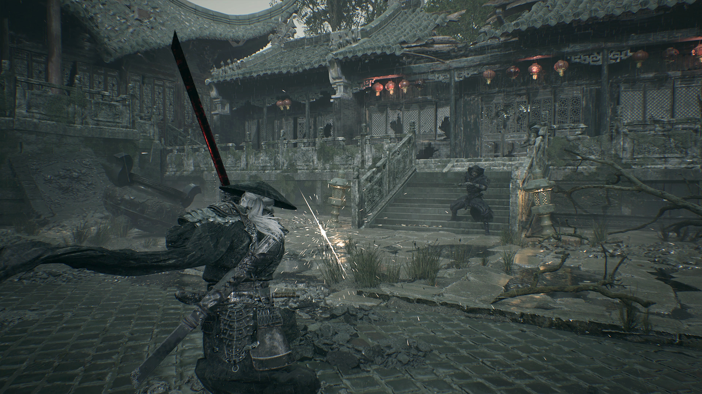
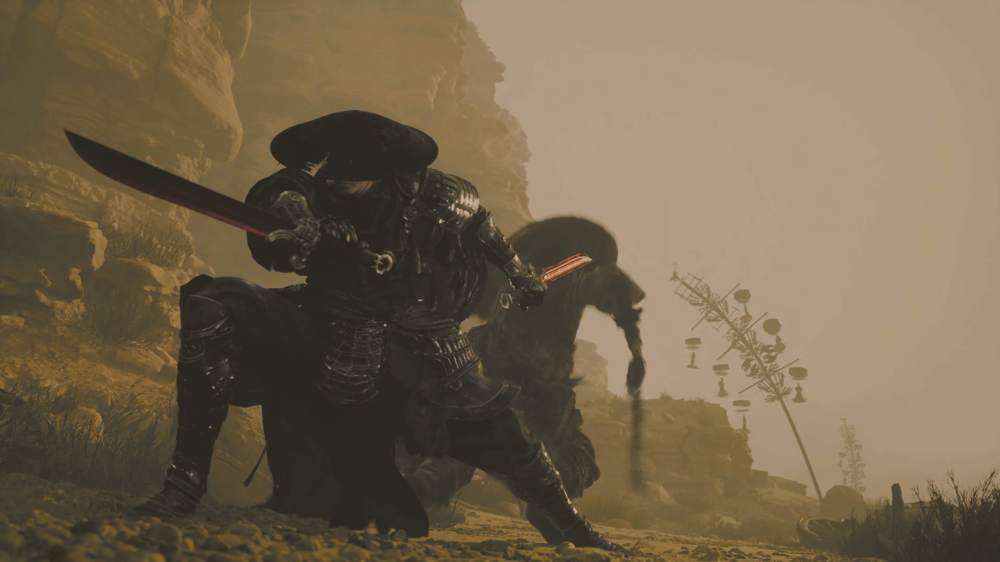
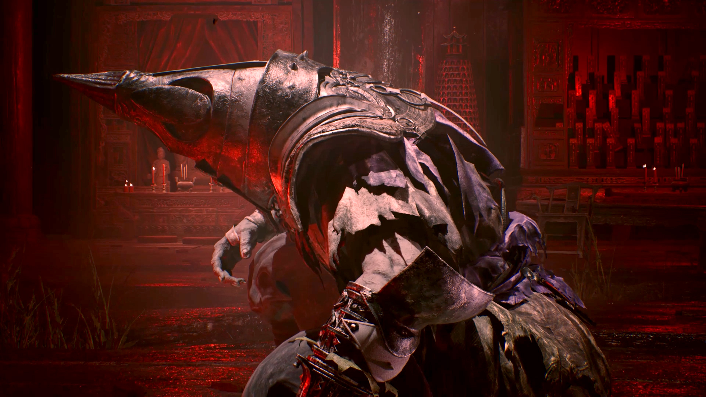
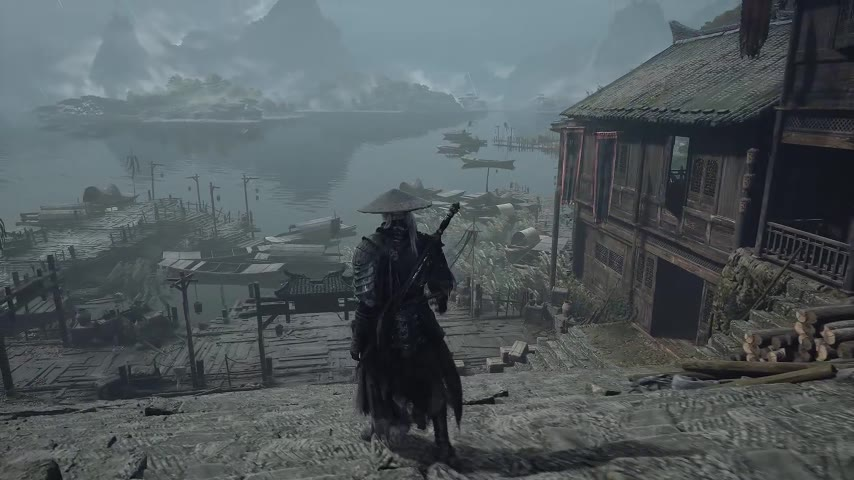
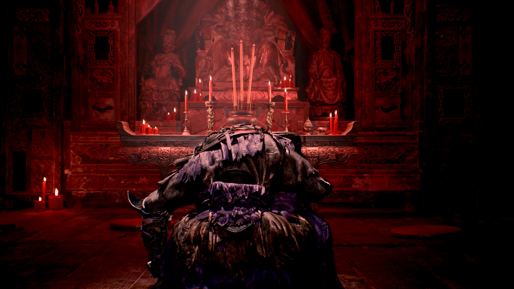

Metacritic's latest platform-specific snapshot located for this roundup is 88 on PC and 87 on PS5 (October 31, 2026). OpenCritic's Top Critic Average was 89/100 from 74 reviews in a November 8 snapshot. Steam user reviews were Very Positive, with 94% positive from 95,817 reviews at 23:44 UTC on November 8. These are separate services with different samples and scoring methods, so they should not be combined into one average. (Metacritic platform snapshot reported by Vi.ki, 2026-10-31; OpenCritic snapshot reported by Output Lag, 2026-11-08; Steam review data tracked by Charts.game, 2026-11-08)
The game launched globally on October 29, 2026 UTC; players in parts of North America saw the release on October 28 local time. Its official arsenal description is more than 30 main weapons plus 25 Phantom Edges, rather than a confirmed exact total of 55 main weapons. (S-GAME official site; PlayStation Support; PlayStation.Blog, 2026-08-17)
Critics most consistently praise the combat, boss encounters, and presentation. The recurring reservations concern story delivery, enemy and boss balance, constrained traversal in some areas, and technical performance that varies by platform, hardware, and review build. (Output Lag, 19-review analysis, checked 2026-11-07; PC Gamer, 2026-11-05; Push Square, 2026-10-26; Creative Bloq, 2026-10-26)
Correction note: the earlier figures of 52 PC critic reviews, 48 PS5 critic reviews, and a Metacritic user score of 8.6 from 1,554 ratings could not be independently confirmed. Available Metacritic captures disagree on review counts, so this page omits those counts and does not publish a Metacritic user score. (Metacritic; Vi.ki, 2026-10-31; Output Lag, checked 2026-11-07)
88
Metacritic PC
snapshot 2026-10-31
87
Metacritic PS5
snapshot 2026-10-31
89
OpenCritic top critic
74 reviews, 2026-11-08
94%
Steam positive
95,817 reviews, 2026-11-08
Selected verified review scores
The table lists 13 outlet reviews whose scores and review records could be matched to a source. Scores are normalized to a 100-point scale for comparison; the outlet's original score is shown in parentheses. Verdict labels are editorial shorthand based on the number, not the outlet's own wording. This is a selected sample, not a complete Metacritic or OpenCritic list. (Outlet review pages and OpenCritic records, checked 2026-11-09)
| Outlet | Platform | Score | Verdict at a glance | Review source |
|---|---|---|---|---|
| Saudi Gamer | PC | 100 (5/5) | Perfect score | OpenCritic record |
| CGMagazine | PC | 95 (9.5/10) | Strong recommendation | CGMagazine review |
| Game Informer | PS5 | 95 (9.5/10) | Strong recommendation | Game Informer review |
| Gameliner | PC | 90 (4.5/5) | Recommended | Gameliner review |
| Adrenaline | PC | 90 (9/10) | Recommended | Adrenaline review |
| IGN | PC | 90 (9/10) | Recommended | IGN review |
| PC Gamer | PC | 90 (90/100) | Recommended | PC Gamer review |
| GamesRadar+ | PC | 90 (4.5/5) | Recommended | GamesRadar+ review |
| Push Square | PS5 Pro | 90 (9/10) | Recommended | Push Square review |
| GAMES.CH | PC | 85 (85%) | Positive with reservations | GAMES.CH review |
| GameSpot | PC | 80 (8/10) | Positive | GameSpot review |
| Creative Bloq | PS5 Pro | 70 (3.5/5) | Mixed; notable reservations | Creative Bloq review |
| Eurogamer | PC | 60 (3/5) | Most critical score in this table | Eurogamer review excerpt in roundup |
The Eurogamer row links to a contemporaneous review roundup that quotes Emma Kent's 3/5 assessment; a direct Eurogamer review URL could not be independently verified in this check. Saudi Gamer's score is linked to its OpenCritic game record rather than a direct outlet page. The earlier Spilstrøm row has been removed because no attributable review page or score could be located. Destructoid and VG247 are also omitted: the Destructoid result located was a news roundup, and no scored VG247 review was verified. (Push Square, 2026-10-26; OpenCritic; Destructoid, 2026-10-26; search checked 2026-11-09)
What critics most consistently praise
In a 19-review sample analyzed by Output Lag, combat was praised in 19 of 19 reviews, boss fights in 18 of 19, art and animation in 18 of 19, exploration in 19 of 19, and weapon variety in 17 of 19. Those counts describe that outlet's sample, not Metacritic's full review pool. (Output Lag, checked 2026-11-07)
Combat flow
Reviewers repeatedly highlight the combination of parries, aggressive attacks, executions, and weapon switching. PC Gamer describes the combat as fluid and expressive, while IGN praises its consistency across a long playthrough. (PC Gamer, 2026-11-05; IGN, 2026-10-26; CGMagazine, 2026-10-25)

Parry timing against a leaping attacker in a rain-soaked courtyard. Screenshot from the playable build, retrieved 2026-11-09.
The weapon arsenal
S-GAME's published description specifies more than 30 main weapons and 25 secondary weapons called Phantom Edges. The November 4 patch notes mention updated weapon and skill descriptions, but do not announce a change to the weapon count. The exact combined total should therefore be described as 55-plus, not as an exact 55. (PlayStation.Blog, 2026-08-17; S-GAME patch notes, 2026-11-03)

Main weapon in the right hand, Phantom Edge in the left: the swap reviews keep naming. Screenshot from the playable build, retrieved 2026-11-09.
Boss encounters
Boss design is a major source of praise, but difficulty and pacing are disputed. Game Informer praises the distinct encounters and checkpoints between boss phases; Eurogamer and Creative Bloq criticize some fights as prolonged or overly demanding. (Game Informer, 2026-10-27; Eurogamer, 2026-10-26, quoted by Push Square; Creative Bloq, 2026-10-26)

A boss encounter from the playable build. Phase checkpoints are the design point reviewers single out. Screenshot, retrieved 2026-11-09.
World and presentation
Reviewers praise the wuxia-inspired art direction, animation, and audiovisual presentation. Exploration is more qualified: the game uses interconnected, increasingly open maps with optional quests and hidden items, but some reviewers criticize invisible barriers, traversal prompts, and guided routes. It is better described as an open-zone structure than as either a fully open world or a sequence of simple corridors. (Push Square, 2026-10-26; Gameliner, 2026-10-26; Creative Bloq, 2026-10-26; PC Gamer, 2026-11-05)
Rooftop traversal and combat in motion. Footage from the playable build, retrieved 2026-11-09.
Where reviews split
The review spread does not support a single universal complaint. Narrative delivery, boss balance, exploration freedom, and technical performance receive materially different assessments across outlets and platforms. (PC Gamer, 2026-11-05; Game Informer, 2026-10-27; Eurogamer, 2026-10-26; Creative Bloq, 2026-10-26)
PC performance, ray tracing, and path tracing
Performance reports vary by hardware and review build. PC Gamer reported generally good results on a Radeon RX 6800 XT, with occasional dips during effects-heavy fights. Adrenaline's pre-launch PC review reported stuttering on an RTX 5070 Ti when ray tracing and path tracing were enabled, then said the day-one patch resolved much of the problem on NVIDIA hardware. S-GAME's November 4 patch notes also list performance improvements in certain areas and changes to PC shader compilation. These reports are not controlled tests on the same build. (PC Gamer, 2026-11-05; Adrenaline, 2026-10-25, updated 2026-10-29; S-GAME patch notes, 2026-11-03)
The official PC targets are specific: the standard recommended tier is an RTX 3060 Ti or RX 6700 XT for 1440p/60 FPS with upscaling; the ray-tracing tier lists an RTX 5060 for 1080p/60; the path-tracing tier lists an RTX 5080 16GB for 2160p/60 with upscaling. The RTX 5080 figure is therefore the official path-tracing target, not a verified 1440p/60 target. A settings guide reports that Ray Tracing Quality is Off by default. (S-GAME official PC requirements, 2026-08-12; All Things How, checked 2026-11-09)
Exploration and level design
The game is not an open-world map in the Elden Ring sense. It moves through multiple connected regions with optional routes, side quests, gated paths, and hidden pickups. Some critics find the maps too guided or restrictive because of invisible barriers and fixed interaction points; others praise the optional areas and interconnected layout. The criticism is about the limits on traversal and discovery, not a lack of any exploration. (Push Square, 2026-10-26; Gameliner, 2026-10-26; Creative Bloq, 2026-10-26)

A connected region seen from a ridge: open zones joined by gated paths rather than one seamless map. Screenshot, retrieved 2026-11-09.
Narrative delivery
Story is one of the more divisive elements. Push Square calls the storytelling poor and criticizes the flashbacks and collectibles; IGN describes the plot as convoluted; Game Informer calls the narrative the game's weakest link. PC Gamer, by contrast, finds the revenge plot accessible and says the world and characters are gradually revealed. The evidence supports a split verdict, not a claim that every critic found the story muddled. (Push Square, 2026-10-26; IGN, 2026-10-26; Game Informer, 2026-10-27; PC Gamer, 2026-11-05)

A story beat staged at a shrine. Presentation is praised across the spread; delivery is the part that divides. Screenshot, retrieved 2026-11-09.
Boss difficulty and pacing
Some reviewers report difficulty spikes and long boss encounters, especially in the early-to-mid game. Others find the challenge manageable because boss phases retain checkpoints, difficulty options are available, and accessories can widen parry or dodge windows. The opening-boss curve should not be presented as a universal consensus. (Eurogamer, 2026-10-26, quoted by Push Square; Creative Bloq, 2026-10-26; Game Informer, 2026-10-27; PC Gamer, 2026-11-05)
What explains Eurogamer's 60?
Eurogamer's 3/5 (60/100) is the lowest score in the table. Its criticism focuses on boss fights that can feel slow and overly turn-based, particularly in the early-to-mid game, alongside narrative and lore-delivery problems. The review's explanation is broader than PC ray tracing performance; it should not be attributed to optimization alone. (Eurogamer, Emma Kent, 2026-10-26, quoted by Push Square's review roundup and Game*Spark, 2026-10-27)
Critic scores versus player reviews
The earlier comparison of 98% positive critic reviews against 84% positive Metacritic user ratings is removed because the underlying counts and user-score snapshot could not be confirmed. The latest dated figures located here are OpenCritic's 89/100 from 74 critic reviews and Steam's 94% positive from 95,817 reviews. These are different populations and methodologies; the percentages should not be compared as if they were calculated from the same sample. (Output Lag, 2026-11-08; Charts.game, 2026-11-08)
No reliable percentage was found for the share of negative Steam reviews that specifically mention performance. The page therefore does not assign a numerical share to that complaint. Individual reviews do mention frame drops, stuttering, and launch-build issues, but those reports do not establish how common the complaint is across all player reviews. (Steam review data; PC Gamer, 2026-11-05; Adrenaline, updated 2026-10-29)
Which version should you buy?
The last platform-specific Metacritic snapshot located for this check is PC 88 and PS5 87, dated October 31. A one-point difference is too small to support a strong platform-quality conclusion, and the available sources do not provide a controlled comparison of the same review pool on both platforms. (Vi.ki, 2026-10-31)
PS5 provides a fixed hardware target and avoids PC graphics-setting decisions. PC offers more adjustable settings, including ray tracing and path tracing, but the official requirements distinguish those modes sharply: RTX 3060 Ti/RX 6700 XT for the standard 1440p/60 target, RTX 5060 for ray-traced 1080p/60, and RTX 5080 16GB for path-traced 4K/60, all with upscaling. Ray Tracing Quality is reported Off by default. (S-GAME official PC requirements, 2026-08-12; All Things How, checked 2026-11-09)
Choose based on hardware and tolerance for tuning. The PS5 review evidence is not uniformly flawless: Push Square reports mostly smooth 60 FPS on PS5 Pro with drops in some boss fights. PC Gamer reports generally good performance on its RX 6800 XT test system, while other PC reviews describe stuttering in particular areas or settings. Neither platform changes the game's story or open-zone structure. (Push Square, 2026-10-26; PC Gamer, 2026-11-05; Adrenaline, updated 2026-10-29)
Frequently asked questions
Is Phantom Blade Zero any good?
Critic reception is strong: the latest platform-specific Metacritic snapshot located is 88 on PC and 87 on PS5, while OpenCritic's Top Critic Average was 89/100 in its November 8 snapshot. Combat and boss encounters are the most consistent positives; story delivery, boss balance, and technical polish are the main caveats. (Vi.ki, 2026-10-31; Output Lag, 2026-11-08)
Is it like Elden Ring?
Only in broad action-RPG and checkpoint conventions. Phantom Blade Zero is not an open-world game; it uses interconnected open-zone maps with optional routes, side quests, and gated areas. Its exploration is more guided than Elden Ring's open world. (Push Square, 2026-10-26; Gameliner, 2026-10-26)
How long is it?
Push Square estimates roughly 25–30 hours for the main story and around 45 hours for optional quests and weapon upgrades. PC Gamer reports about 50 hours to complete the content and unlock the true ending. Actual time depends on difficulty and completion goals. (Push Square, 2026-10-26; PC Gamer, 2026-11-05)
Does it have a Souls-like death system?
It borrows checkpoints and collectible echoes, but it does not use the standard Souls-style currency recovery loop: PC Gamer reports that remnant echoes are not lost on death, defeated enemies do not respawn when resting, and a boss phase reached before death remains cleared on retry. (PC Gamer, 2026-11-05; Game Informer, 2026-10-27)
Is it harder than Sekiro?
There is no standardized cross-game difficulty test that supports a definitive ranking. Reviews describe demanding bosses, but Phantom Blade Zero is more forgiving in several structural ways: it offers difficulty options, checkpoints between boss phases, and no loss of remnant echoes on death. Some reviewers still report difficulty spikes and prolonged boss fights. (Game Informer, 2026-10-27; PC Gamer, 2026-11-05; Creative Bloq, 2026-10-26)
Should I wait for a sale?
Steam's US price remained $59.99 with no discount recorded in the tracked price history through November 7, 2026. That confirms no Steam US price cut in that observation window; it does not predict when the next sale will happen. Authorized third-party stores may show different prices. (SteamDB, price history through 2026-11-07; Charts.game, checked 2026-11-08)